Santa Monica Studio

| HISTORIA DE LOS VIDEOJUEGOS: |
|---|
La historia de los videojuegos comienza en la década de 1950 y 1960, cuando se desarrollaron los primeros prototipos
de juegos electrónicos. Sin embargo, el verdadero auge de los videojuegos se produjo en la década de 1970, cuando
se lanzaron al mercado las primeras consolas de videojuegos y los primeros juegos arcade.
En la década de 1980, los videojuegos empezaron a popularizarse gracias a la aparición de consolas como la Atari 2600
y la Nintendo Entertainment System (NES), y juegos como Pac-Man, Donkey Kong y Super Mario Bros.En la década
de 1990, los videojuegos se convirtieron en un fenómeno global gracias a la popularidad de consolas como la Sega Genesis,
la Super Nintendo Entertainment System (SNES) y la Sony PlayStation, y juegos como Sonic the Hedgehog, Street Fighter II
y Super Mario 64.En la década de 2000, los videojuegos se convirtieron en una forma de entretenimiento predominante, gracias
a la aparición de consolas como la Xbox, la PlayStation 2 y la Nintendo GameCube, y juegos como Grand Theft Auto III,
Halo: Combat Evolved y The Legend of Zelda: The Wind Waker.
En la década de 2010, los videojuegos se consolidaron como una forma de entretenimiento masivo, gracias a la popularidad
de consolas como la Xbox 360, la PlayStation 3 y la Nintendo Wii, y juegos como Minecraft, Call of Duty y Fortnite.En la
actualidad, los videojuegos son una industria multimillonaria que abarca todo tipo de géneros, desde juegos de acción y
aventuras hasta juegos de simulación y estrategia, y que se juegan en una amplia variedad de plataformas, desde consolar
y ordenadores hasta dispositivos móviles y realidad virtual.
Gearbox fue fundada en enero de 1999 por cinco miembros del equipo de contenido del difunto desarrollador Rebel Boat Rocker: Randy Pitchford, Brian Martel, Stephen Bahl, Landon Montgomery y Rob Heironimus. Antes de Rebel Boat Rocker, Pitchford y Martel ya habían trabajado para 3D Realms, y Montgomery en Bethesda Softworks.
si quieres saber más de Gearbox presiona aqui
| nombre del juego | portada |
|---|---|
| borderlans 1 | 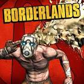 |
| borderlans 2 | |
| borderlans 3 | 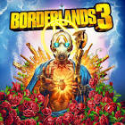 |
| Tiny Tina's Wonderlands | 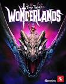 |
Activision es una empresa de videojuegos estadounidense propiedad de Activision Blizzard. Fue el primer desarrollador y distribuidor independiente de este tipo de juegos, fundado el 1 de octubre de 1979 y con sede en Santa Mónica, California.2 Sus primeros productos fueron cartuchos para la videoconsola Atari 2600; en la actualidad, es la tercera mayor distribuidora de videojuegos, y ha creado diversos títulos, entre ellos Call of Duty.si quieres saber más de Activision presiona aqui
| nombre del juego | portada |
|---|---|
| Call of Duty:Modern Warfare | 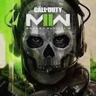 |
| Call of Duty:Modern Warfare 3 | 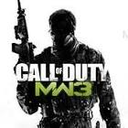 |
| Call of Duty: WWII | 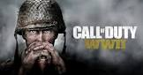 |
Fromsoftware es una compañía japonesa de videojuegos fundada en noviembre de 1986 conocida principalmente por ser los creadores de las series Armored Core, Demon's Souls, King's Field, Otogi, Tenchu, Dark Souls, Bloodborne, Sekiro: Shadows Die Twice y Elden Ring.si quieres saber más de Fromsoftware presiona aqui
| nombre del juego | portada |
|---|---|
| Bloodborne | 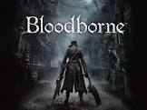 |
| Dark Souls | 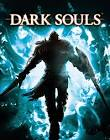 |
| Dark souls 2 | 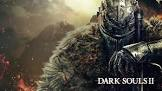 |
| Elder Ring | |
| Sekio: Shadows Die Twice | 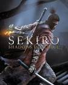 |
Santa Monica Studio es un dessarrollador de videojuegos estadounidense con sede en Los Ángeles. Un estudio propio de Sony interactive Entertainment,es mejor conocido por desarrollar la serie God of War.El estudio fue fundado en 1999 por Allan Becker y estuvo ubicado en Santa
Mónica,California,hasta que se mudó a Playa Vista en 2014.si quieres saber más de Santa Monica Studio presiona aqui
| nombre del juego | portada |
|---|---|
| Wod of War 1 | 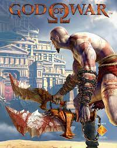 |
| God of War 2 | 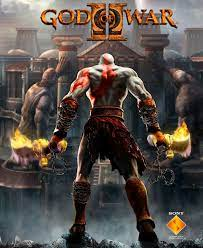 |
| God of War 3 | 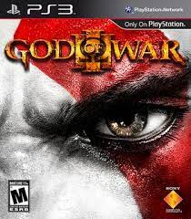 |
| God of War 4 |  |
| God of War 5: Ragnarok |  |